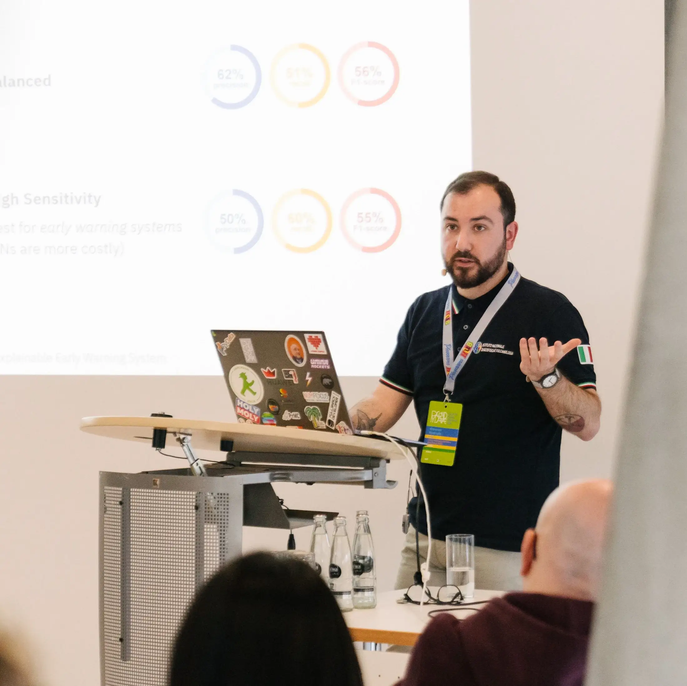
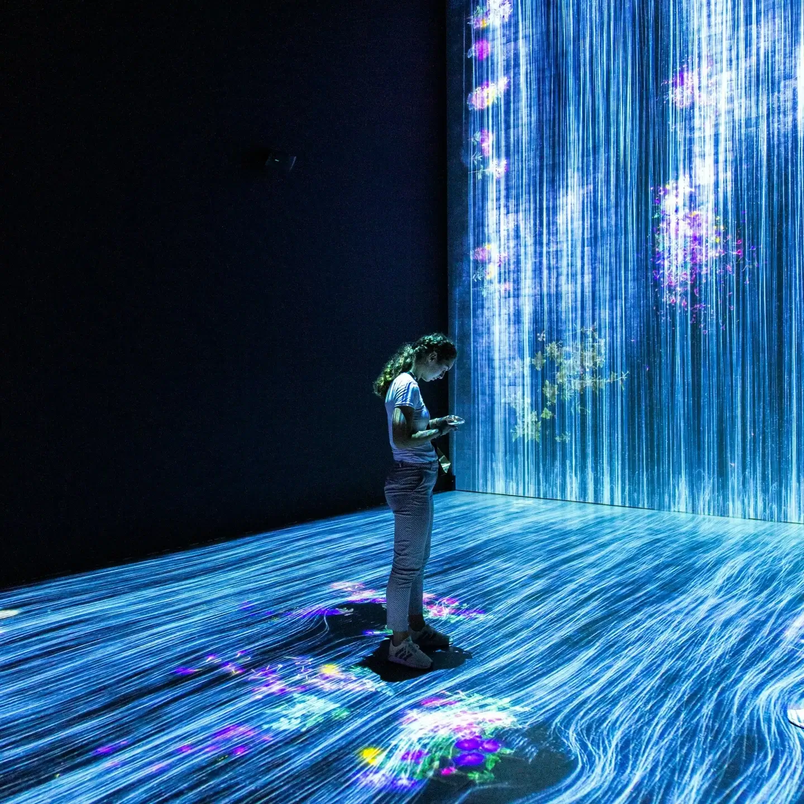
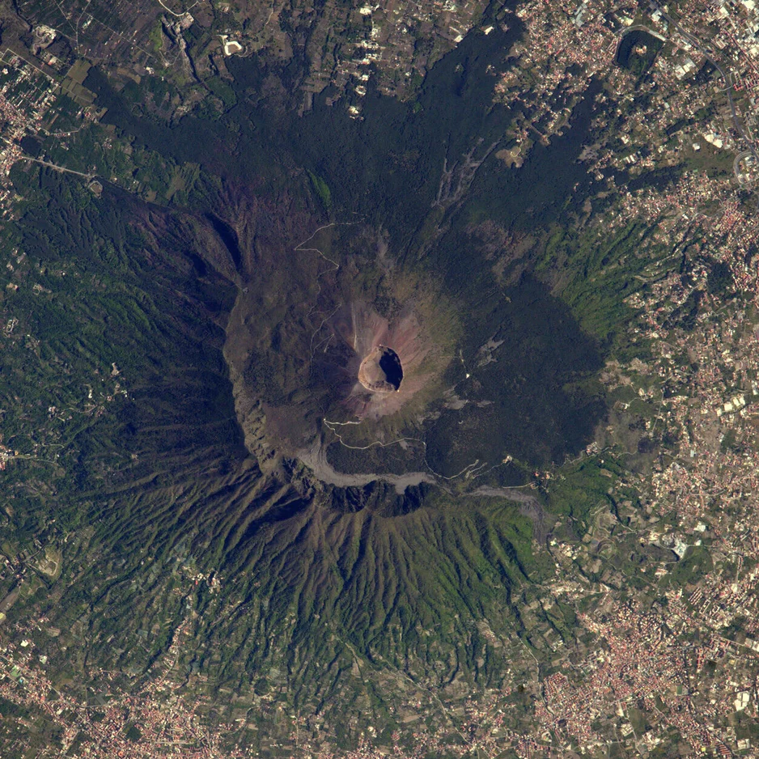
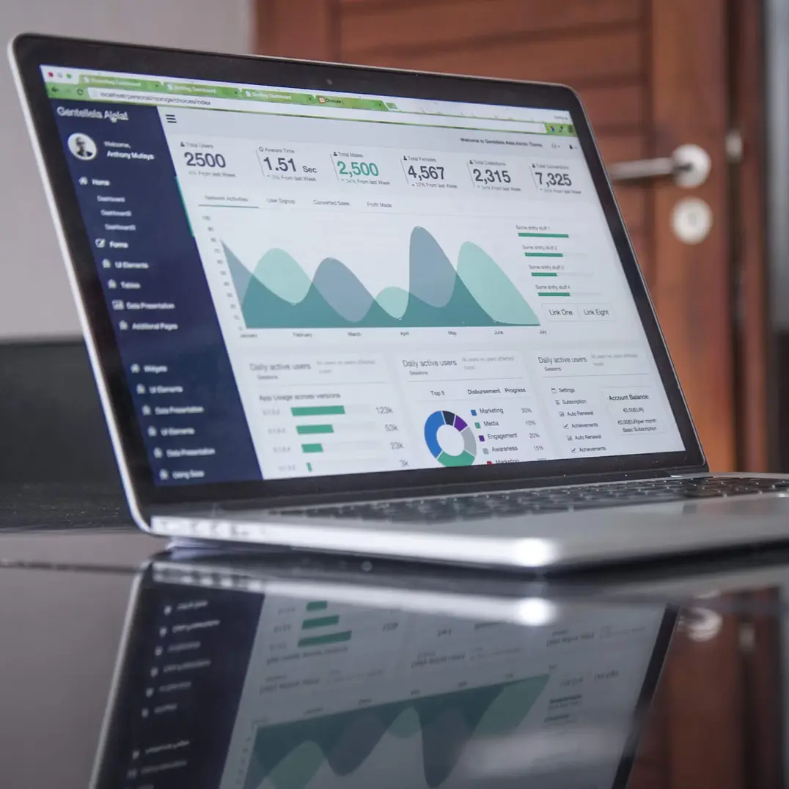
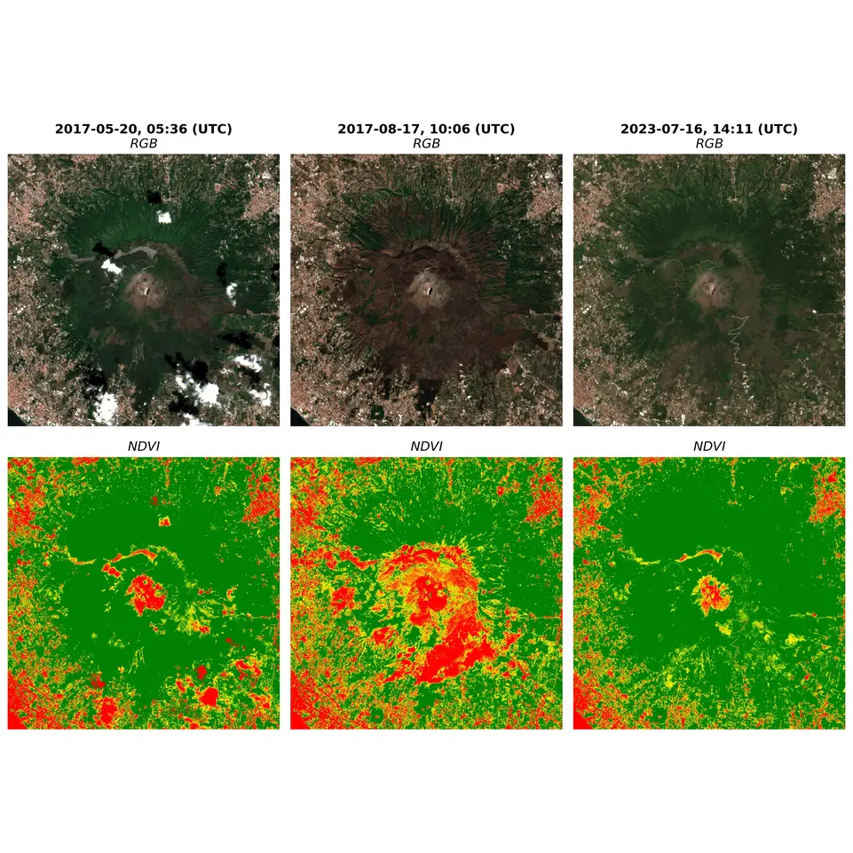
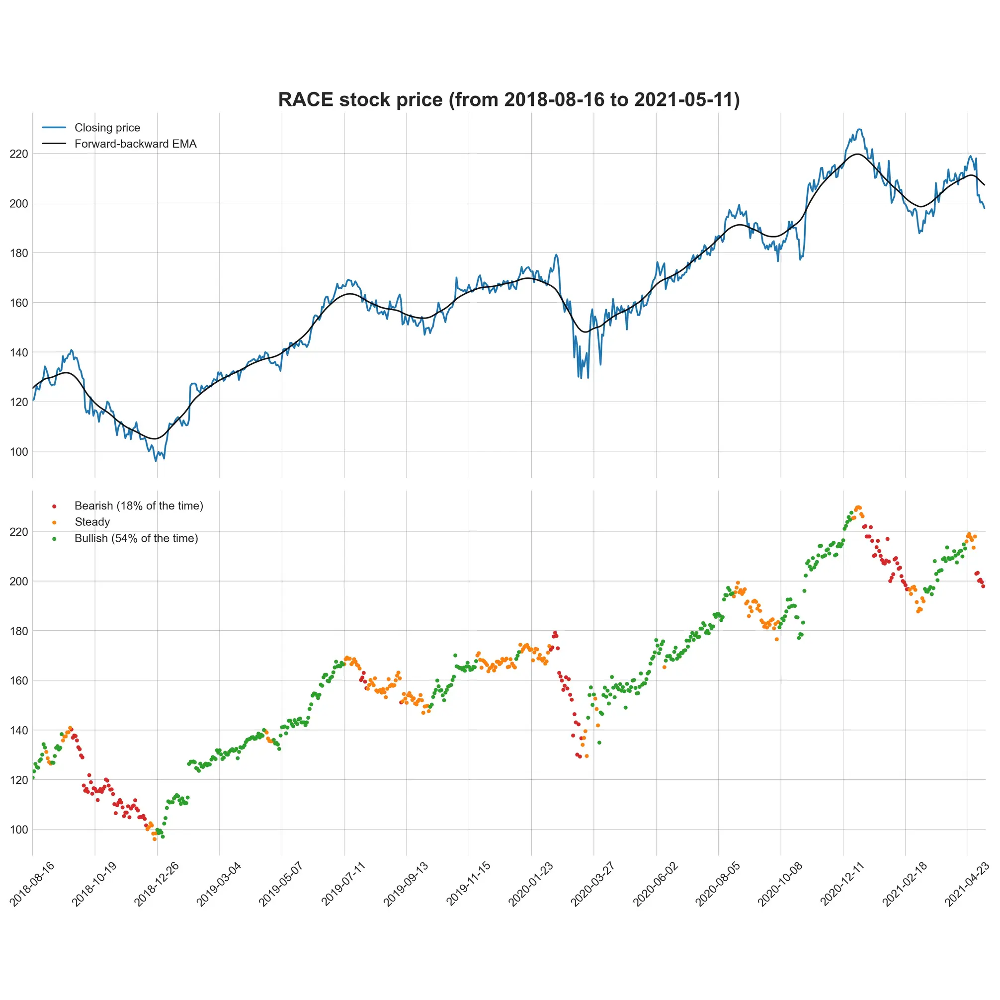
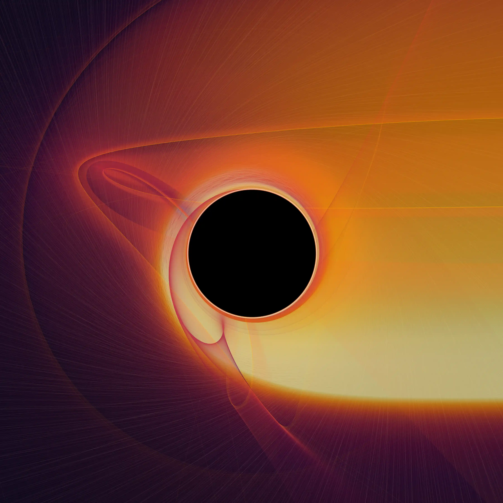
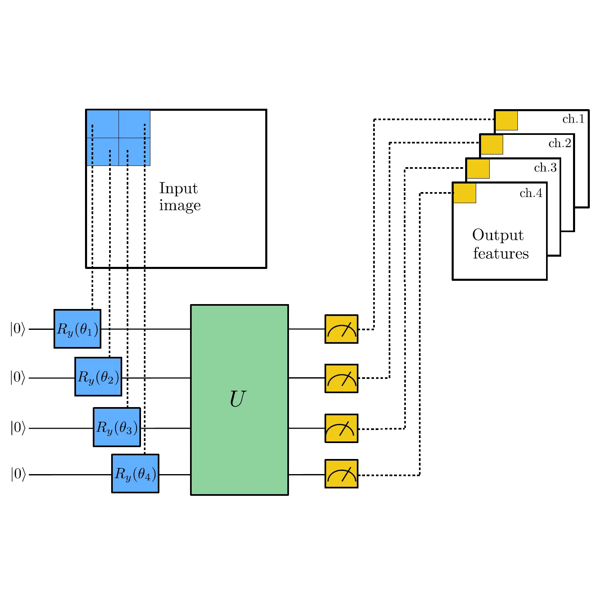

About Me

Data Scientist, ML & AI Engineer
A results-driven data professional – focused on hype-free solutions
tailored to business needs.
I am currently creating value at the National Institute of Geophysics
and Volcanology (INGV), where I develop machine learning models in
the Space Weather domain. My job is complemented by finding the
hidden stories in data and make them accessible to
stakeholders. I studied Physics in Italy and Germany, previously worked
on Analytics in the strategic division of the world's largest
professional services network, and in the Data Science department of
the leading Italian publisher.
When not at work, I enjoy theatre (maybe you spotted San Carlo
in the sidebar), diving into personal finance, learning a new language, or organising PyData Roma Capitale
- Email: vincenzo.ventriglia@outlook.com
- LinkedIn: vincenzoventriglia
- Latest Role: Data Scientist & MLE @ INGV
- Based in: Rome & Naples, Italy
Short CV
This is a (very) short CV; if you are interested in the full one, please contact me.
Experience
Data Scientist & MLE
12/2023 - to date
Istituto Nazionale di Geofisica e Vulcanologia (INGV), Rome (IT)
Organiser & Community Manager
11/2024 - to date
PyData Roma Capitale, Rome (IT)
Guest Lecturer
12/2025 - 12/2025
Sapienza Università di Roma, Rome (IT)
Data Scientist
09/2022 - 11/2023
Zanichelli Editore, Bologna (IT)
Education
MSc in Theoretical Physics
09/2017 - 07/2020
Università degli Studi di Napoli Federico II, Naples (IT)
Erasmus+
03/2019 - 08/2019
Goethe-Universität Frankfurt am Main, Frankfurt am Main (DE)
BSc in Physics
09/2013 - 05/2017
Università degli Studi della Campania L. Vanvitelli, Caserta (IT)
Research Intern
02/2017 - 05/2017
Istituto Nazionale di Fisica Nucleare (INFN), Naples (IT)
Skills
Programming
AI Frameworks & ML
Data Engineering
Data Viz & BI
CI/CD & DevOps
Leadership & Engagement
Languages
Expertise

Machine Learning
- Scalable forecasting with statistical, econometric and machine learning models
- Probabilistic forecasting and post-hoc uncertainty quantification with Conformal Prediction
- Advanced feature engineering
Business Intelligence & Analytics
- Full-stack development of an actionable web app to democratise data access for C-suite, which has become the de facto standard in the company
- Developed a web app to produce near real-time statistics on any investment portfolio
- Data integration for corporate finance
- Creation of a central data warehouse for CRM
- Contributed to the definition and implementation of modern data pipelines

Space
- Developed a high-performance, lightweight (Python + Rust) package for modelling ionospheric quantities from multi-constellation GNSS observables, slashing processing times from minutes to seconds
- Probabilistic forecast of low-latitude ionospheric scintillation
Data-driven Marketing
- Designed a Next-Best-Action recommender for sales reps, clustering high-volume digital sessions for a leading Italian publisher
- Customer sentiment and feedback analysis with NLP techniques for a major European bank

Finance
Conferences
Here are some conferences and initiatives related to AI, data or broader research.
PyData Roma Capitale | Organiser
Part of the organising team of the Roman chapter of PyData, a community for everyone who loves Python, data and meeting tech fellows.
Our goal is to foster an inclusive environment for connecting, sharing work, and exchanging ideas on evolving challenges in AI, data science & engineering, research, and industry. We are passionate about open-source tools and bringing together enthusiasts and professionals from diverse backgrounds.
Website Meetup LinkedinSome conferences I have attended or will attend
Where we'll meet
-
PyCon Italia 2026
| Bologna, Italy | Speaker -
PyData London 2026
| London, UK | Speaker -
EuroPython 2026
| Kraków, Poland | Speaker -
Committee on Space Research (COSPAR) 2026 – 46th Scientific Assembly
| Florence, Italy | Speaker
Where we've met
2026
-
PyCon DE & PyData 2026
| Darmstadt, Germany | Speaker
2025
-
New Space Economy 2025 – European Expoforum
| Rome, Italy | Exhibitor | YouTube | Spotify -
Beacon Satellite Symposium 2025
| Rome, Italy | Speaker -
AI in Physical Sciences
| Rome, Italy | Keynote Speaker -
IAGA / IASPEI Joint Scientific Meeting 2025
| Lisbon, Portugal | Speaker -
Mathematics for Signal Processing and Applications in Geophysics and Other Fields
| L'Aquila, Italy | Speaker -
PyCon DE & PyData 2025
| Darmstadt, Germany | Speaker | YouTube -
Machine Learning and Computer Vision in Heliophysics
| Sofia, Bulgaria | Speaker
2024
-
New Space Economy 2024 – European Expoforum
| Rome, Italy | Exhibitor -
Space Weather Italian Community Congress
| Rome, Italy | Poster -
PyData Amsterdam 2024
| Amsterdam, Netherlands | Attendee -
4th URSI Atlantic Radio Science Meeting (AT-RASC)
| Gran Canaria, Spain | Poster
2023
-
PyCon Italia 2023
| Florence, Italy | Attendee
Projects
Here is a selection of projects I have worked on as a researcher, as a student or in my leisure time.
- All
- Time Series
- Remote Sensing
- Space
- Finance
- Other
Research project for GNSS ionospheric scintillation forecasting at low latitudes

Satellite imagery project (Sentinel-2 mission) to study Mount Vesuvius pre- and post-July 2017 wildfires

Machine Learning algorithm to identify periods of growth, decline and stationarity in stock data

Image of a black hole, produced by ray tracing photons in a rotating spacetime in General Relativity

Does adding quantum features improve the overall performance of a neural network?
Draw a recipient for each secret Santa and send an email to each Santa's inbox of who their gift recipient is